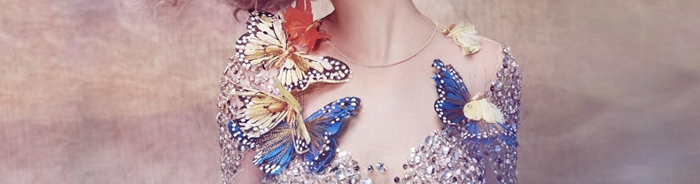

发布者：思圻乐发布时间：2016-06-12浏览次数：1564
女人远看形！近看胸和眼！转身闻香！闭目听音！女人为什么一定要形像管理呢？
因为：旧了不能换，皱了不能烫，人的一生中，衣服可以有几千套，钞票可以有千百万张，而好身材，一辈子只有一副，好 皮肤一辈子只有一张。作为女人，一定要明白的道理：
1.一双没有生命的皮鞋都要擦鞋油，更何 况我们一张每天用来示人的脸；
2.好形象是女性永久的时装，很多人花 很多的钱来装修自己的房子，太多人来参观你的房子，却不懂保养自 己，带着一副松弛 臃肿、 下垂的身材。
3.女人保养是老样子，不保养是样子老；
4.潘虹在一本书上这样说：男人都是 属“蜜蜂”，蜜蜂的天性是采花，如果家里 这朵花不鲜艳了，枯了，蜜蜂就会往外跑 了， 专注去采野花；
5.美丽是有生产力的，今天不管你有多 少钱别人看不到，但形象是无价的；
6.很多的女人家里的地板，锅盖擦得比自 己的脸还要亮，可是我们知道没有一个老 公会去亲吻地板和锅盖的；
